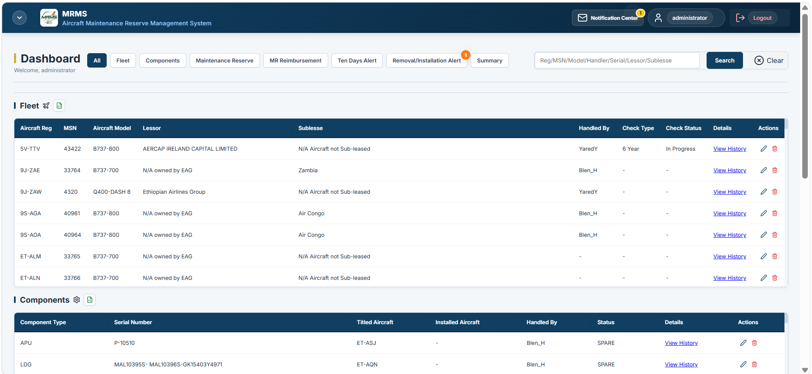
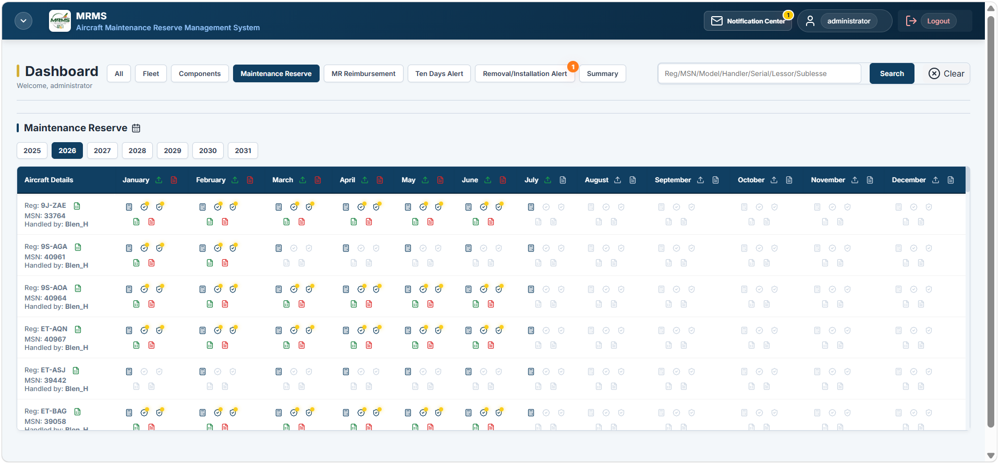
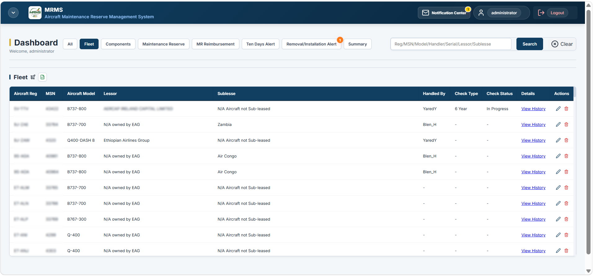
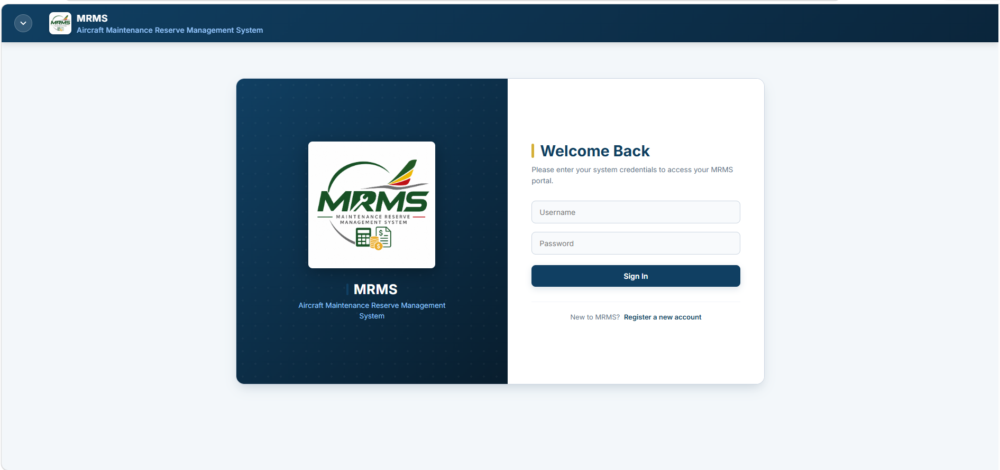

- Flight-hour (FHR) basis
- Flight-cycle (FC) basis
- Calendar-month basis
- Mixed-basis reserve items
- Aircraft FHR/FC sector-time ratio
- Annualized utilization
Internally developed within Ethiopian Airlines
MRMS - Aircraft Maintenance Reserve Management System.
Developed within Ethiopian Airlines Aircraft Engineering & Planning (Aircraft Lease, EIS & Special Projects Section), MRMS automates, maintenance reserve calculations, reimbursement follow-up, monthly utilization report processing, planning and maintenance event alerts, validation workflows and management reporting.
DESIGNED & DEVELOPED BYYabsera ErdawAircraft Engineering & Planning · Aircraft Lease EIS & Special Projects · Ethiopian Airlinesyabserae@ethiopianairlines.com
Internally designed and developed to support
Aircraft Lease Management operational workflows
MRMS / SYSTEM SCOPE09 controlled domains
- 01Maintenance reserve calculationCORE
- 02Contract configurationRULES
- 03Utilization processingINPUT
- 04Reimbursement managementCLAIMS
- 05Email automationINGEST
- 06Planning and maintenance event alertsEVENTS
- 07Review & validationCONTROL
- 08Reporting & exportsOUTPUT
- 09Fleet & componentsCONTEXT
Internally engineered at Ethiopian Airlines100+ Leased AircraftThousands of reserve itemsThousands of rate recordsCalculation in seconds
Platform interface
Operational MRMS workflows
Actual platform views showing fleet context, monthly reserve control, calculating-form configuration and planning and maintenance-event alerts.






01 / Core capability
Maintenance Reserve Calculation
Calculates aircraft- and component-level monthly reserves using effective contractual logic and validated utilization.
01Resolve assetRegistration · MSN · S/N · title
→02Select periodReporting month · effective form
→03Load utilizationBegin/end TSN · CSN · FHR · FC
→04Apply methodFixed · step · interpolation
→05Apply controlsEscalation · derate · cap
→06Write ledgerPayment · balance · evidence
- Fixed contractual rates
- Step-rate bands
- Engine interpolation tables
- Ratio-based rate selection
- Engine severity-factor calculation
- Engine-derate calculation
- Current-month payment
- Previous cumulative payment
- Current cumulative payment
- Underpayment reconciliation
- Overpayment reconciliation
- Net amount payable
- Engine performance restoration
- LLP, HSI, cold section and RGB
- APU and landing gear
- Propeller reserves
- Structural checks
- Custom reserve items
FLEET PROCESSING100+aircraft in a complete monthly calculation workflow
EXECUTIONSecondsfor fleet-wide parsing and maintenance reserve calculation
Calculation snapshots preserve inputs, applied rates, escalations, caps, derived values, user changes and validation state.
02 / Contract configuration
Calculating Forms, Rates & Escalation
Configures lease-specific reserve rules by aircraft, titled component and effective contractual period.
- Multiple forms per aircraft
- Effective start and end dates
- Lessor and lease references
- Configurable decimal precision
- Controlled save, reset and period management
- FHR, FC and monthly rate bases
- Aircraft- and component-specific rates
- Interpolation tables and ratio thresholds
- APU aircraft-utilization assumptions
- Custom items and payment caps
- Date-controlled escalation periods
- Period-specific rates, bases and caps
- Engine and LLP escalation validation
- Calculation blocked when a period is missing
- Applied evidence retained historically
- Physical installation mapping
- Contractual aircraft-title mapping
- Historical title periods
- Overlapping-period prevention
- Rate resolution by titled component
03 / Automated input processing
Utilization Report Processing
Parses monthly aircraft reports and produces source-linked utilization inputs.
Report identificationAircraft registration · reporting month · source type · report layout
PDF extractionAircraft FHR/FC · component TSN/CSN · installed-component identifiers
MatchingRegistration · component type · serial number · aircraft configuration
Period comparisonPrevious-month values · current-month values · monthly utilization difference
Missing data controlSource caution · previous validated value · installation/removal-derived fallback
Correction workflowCorrected source upload · deliberate reparse · reviewed recalculation
EvidenceOriginal PDF · extracted value · source classification · calculation input
04 / Lease recovery
Workscope & Reimbursement Management
Tracks maintenance reimbursement from workscope preparation through lessor coordination and claim conclusion.
- Draft workscope preparation
- Aircraft- or component-specific scope
- Attachments and lessor submission
- Review and approval states
- Responsible-handler visibility
- Aircraft and component claims
- Contribution and accrual channels
- Maximum lessor contribution
- Accrued reserve balance
- Separate engine reimbursement intervals
- Existing-claim overlap detection
- Explicit overlap decision
- Awaiting-CRS state
- Active and concluded states
- Elapsed-month urgency indicators
- Alert-to-workscope linkage
- Workscope-to-claim linkage
- Maintenance-event linkage
- Aircraft/component claim history
- Exportable reimbursement tracking
05 / Automated ingestion
Email Automation & Notification Center
Monitors engineering email, classifies attachments and routes reports into controlled workflows.
- Incoming mailbox monitoring
- Message and attachment extraction
- Configurable subject-keyword classification
- Message identifier and mailbox metadata retention
- Category-specific report storage
- Duplicate attachment detection
- Unknown-report staging
- Non-destructive report viewing
- Deliberate add, ignore, restore and delete
- Attachment-level processing status
- Utilization calculation reports
- Removal/installation reports
- Maintenance-plan inputs
- Manual review queue
- Search and category filtering
- Configurable distribution lists
- Automatic notification delivery
- Manual resend
- Failed-delivery retry
- Delivery and event audit history
06 / Planning and maintenance event alerts
Maintenance and Component Event Control
Converts maintenance plans and component reports into human-confirmed actions.
Upcoming reimbursable maintenance
- Latest maintenance-plan import
- Aircraft-specific reimbursement keywords
- Action Required, Workscope Sent and Approved states
- Aircraft Inducted but Claim Not Started state
- Claim Started and Claim Concluded states
- Completed decisions preserved after plan refresh
- Direct hangar-induction and claim-initiation links
Component movement reports
- Event date, aircraft, component and serial number parsing
- Position, TSN, CSN, reason and station extraction
- Existing-component matching
- Pending review before system recording
- Record, reject, duplicate and failed-parse states
- Parsed, modified, previous and new values retained
- Corrected-report reparse and event history
07 / Engineering authority
Review & Validation
Automated output remains provisional until the required human review and validation stages are complete.
- 01Source report retained
- 02Extracted values reviewed
- 03Editable values confirmed
- 04Calculated fields locked
- 05First-level validation recorded
- 06Final validation recorded
- 07Snapshot preserved
✓ Reviewer and validator ownership
✓ Validation timestamps
✓ Carried-forward source cautions
✓ Removal/installation source cautions
✓ Deliberate recalculation
✓ No silent replacement of validated results
✓ Human confirmation of critical events
✓ User modifications retained
✓ Role- and permission-aware actions
✓ Validation-state export warnings
08 / Controlled output
Reporting, Exports & Audit Evidence
Produces aircraft, fleet, approval and claim outputs with calculation and validation context.
09 / Supporting operational context
Fleet & Component Management
Maintains the aircraft, component, installation, title and responsibility records used by calculations and events.
- Aircraft registration, MSN, type and model
- Lessor, handler and sub-lessee
- Delivery and expected redelivery
- Active and in-hangar status
- Aircraft responsibility assignment
- Searchable fleet dashboard and export
- Engine, APU, landing gear and propeller
- Serial-number component tracking
- Installed, removed, spare and in-shop state
- Physical aircraft installation
- Contractual aircraft title
- Component movement history
- Installation and removal TSN/CSN
- Time/cycles since installation
- Shop induction, completion and release
- Hangar induction and release
- Six-, eight- and twelve-year checks
- Event-to-reimbursement linkage
10 / Operational outcomes
Functions translated into controlled operations.
Faster monthly reserve processingReduced manual calculation effortConsistent contractual methodologyTraceable engineering decisionsEarlier reimbursable-event detectionReduced duplicate processingImproved lease complianceFaster management reportingPreserved engineering evidenceControlled human validation

Internal engineering development
Designed and Developed within Ethiopian Airlines.
MRMS was created from Aircraft Lease Management operational requirements and continues to be enhanced around aircraft maintenance reserve, lease-management and engineering-control workflows.
PLATFORM CONCEPTION & DEVELOPMENT
Yabsera ErdawAircraft Engineering & Planning (Aircraft Lease EIS & Special Projects)Ethiopian Airlinesyabserae@ethiopianairlines.com ↗
MRMS translates practical Aircraft Engineering & Planning requirements into implemented calculation, validation, alert, reimbursement and reporting workflows.
No claim of external certification, regulatory approval, commercial endorsement or external adoption is made.